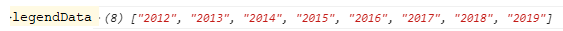
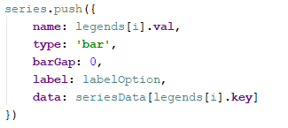
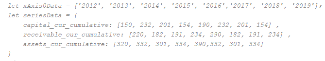
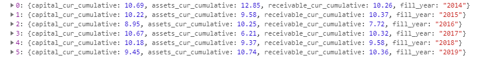

数据处理：



文档说明：
ref:(mustbe)
1.开始ref指向 dom节点，2.然后是ajax返回的数据（监测数据）3.qylrfx 取代item数据,方便再次渲染 self.initDzzmbChart(self.qylrfx)
data:(mustbe)-->xAxis0Data,seriesData
ajax:返回的数据

legends:-->legendData,series
val:(mustbe)
用处说明：
legendData -> legend.data
series -> series.name
key:(mustbe)
用处说明：
series.data
type:
用处说明：
series.type:可选：'line','bar',默认用柱状 'bar'
yAxisIndex:用于柱状折线图
用处说明：
series.yAxisIndex:可选：取不同的横坐标
stack:用于柱状折线图
用处说明：
series.stack:可选：柱子是否重叠，默认取得key，绝对不重合
xAxis:-->xAxis0Data
key:(和yAxis二选一)
用处说明：
xAxis0Data -> xAxis.data
name:(mustbe)
用处说明：
tooltip.formatter
xAxis.name
type:(和xAxis的type相反存在，配合用在竖着的图)
用处说明：
xAxis.type： 默认value
boundaryGap:
用处说明：
xAxis.boundaryGap：柱子间距，默认false，eg:['20%', '20%']
axisLabel
rotate 用处说明：角度倾斜
xAxis.axisLabel.rotate：默认值0
formatter 用处说明：坐标显示格式化
xAxis.axisLabel.formatter：默认不处理
yAxis:
key:(和xAxis二选一)
用处说明：
yAxis0Data -> yAxis.data
name:(mustbe)
用处说明：
tooltip.formatter
yAxis.name
type:(和 yAxis 的type相反存在，配合用在竖着的图)
用处说明：
yAxis.type： 默认 category
grid:
position:
用处说明：
上下左右，默认['5%', '15%', '10%', '5%']
tooltip:
axisPointer:坐标轴指示器，坐标轴触发有效
axis 用处说明：
tooltip.axisPointer.axis，默认'x'
legends: 配置几条显示几条
多柱状
多折线
柱状折线图：name2,yAxisIndex,stack
竖的： yAxis 和 xAxis 的type相反存在，配合用在竖着的图,什么有数据指定他的key